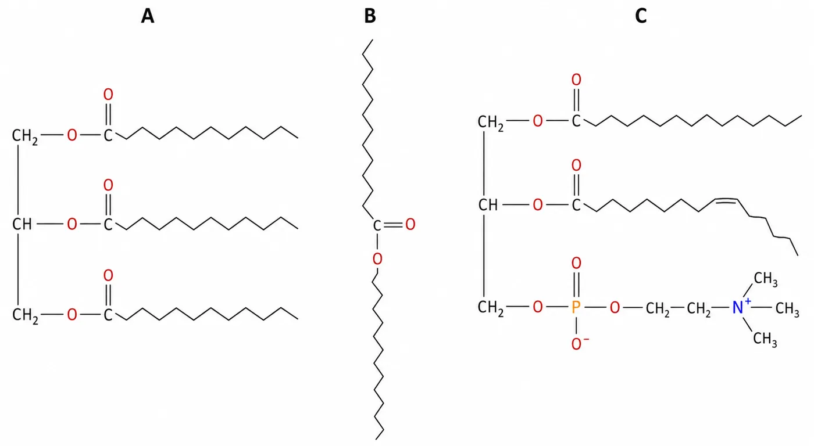
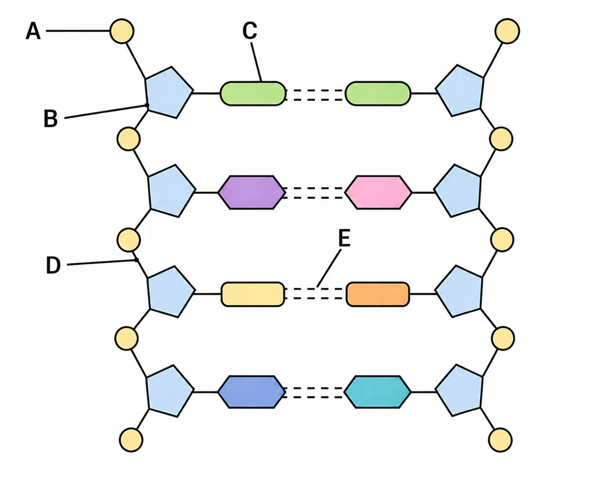

Chemizm życia: zakres pełny Nie katalog wzorów, lecz relacje budowa–właściwość–funkcja.
Nieorganiczne Woda, makroelementy, mikroelementy i jony niezbędne do przewodnictwa, budowy i katalizy.
Organiczne Węglowodany, białka, lipidy i kwasy nukleinowe — monomery, wiązania, struktura i funkcja.
Doświadczenia Wykrywanie skrobi oraz wpływ temperatury, pH, alkoholu i soli na białko.
1
Układ okresowy organizmu Wybierz problem biologiczny i ustal, którego pierwiastka lub jonu dotyczy. Zobacz mechanizm, nie tylko skutek niedoboru.
makro- i mikroelementy
C H, O N P S Na, K Cl Ca Mg Fe I F
Wybierz pierwiastek Każda karta prowadzi od miejsca występowania do funkcji.
Zahamowanie pompy sodowo-potasowej zaburzy przede wszystkim… — wybierz — utrzymanie gradientów jonowych i potencjału błonowego budowę wiązań peptydowych syntezę celulozy przez chlorofil
Niedobór siarki może bezpośrednio ograniczyć… — wybierz — tworzenie mostków disiarczkowych w białkach powstawanie jonów sodu wiązanie tlenu przez jod
Magnez łączy fotosyntezę z metabolizmem, ponieważ… — wybierz — jest składnikiem chlorofilu i kofaktorem wielu enzymów tworzy cukier deoksyrybozę zastępuje wszystkie białka
Sprawdź mechanizmy
2
Architekt węglowodanów Rozpoznaj jednostki, typ wiązania i konsekwencje rozgałęzienia lub ułożenia łańcuchów.
budowa → funkcja Monosacharydy Disacharydy Polisacharydy
Heksozy Glukoza — główny substrat oddychania; fruktoza i galaktoza są jej izomerami o innych układach grup.
Pentozy Ryboza buduje RNA i ATP; deoksyryboza ma o jeden atom tlenu mniej i buduje DNA.
α-D-glukopiranoza β-D-glukopiranoza O OH H OH OH OH CH₂OH 1 2 3 4 5 O OH H OH OH OH CH₂OH 1 2 3 4 5 jedyna różnica: orientacja –OH przy węglu anomerycznym C1 (fiolet) Sacharoza glukoza + fruktoza; główny cukier transportowy roślin.
Laktoza glukoza + galaktoza; cukier mleka.
Maltoza glukoza + glukoza; produkt częściowej hydrolizy skrobi.
Dlaczego glikogen może być szybko mobilizowany? — wybierz — Liczne rozgałęzienia tworzą wiele końców dostępnych dla enzymów. Składa się z β-glukozy tworzącej nierozpuszczalne włókna. Nie zawiera wiązań glikozydowych.
Dlaczego celuloza ma funkcję budulcową? — wybierz — Łańcuchy β-glukozy są proste i tworzą liczne wiązania wodorowe między sobą. Jest silnie rozgałęziona i łatwo hydrolizowana. Składa się z aminokwasów.
Chityna różni się od celulozy przede wszystkim tym, że jej monomer… — wybierz — zawiera grupę z azotem jest kwasem tłuszczowym nie ma atomów węgla
Sprawdź związki budowa–funkcja
3
Próba skrobiowa z kontrolą Zaprojektuj porównanie. Sam kolor granatowy niczego nie dowodzi bez próby kontrolnej.
doświadczenie próba badawcza kontrola bez skrobi Jaki jest sens próby bez skrobi? — wybierz — Pokazuje, że sam odczynnik nie daje granatowego wyniku w badanych warunkach. Zwiększa ilość skrobi w próbie badawczej. Zastępuje wszystkie powtórzenia.
Co można wnioskować po granatowym zabarwieniu? — wybierz — W próbce występuje skrobia tworząca barwny kompleks z jodem. Każdy polisacharyd daje identyczny wynik. Skrobia została przekształcona w białko.
Sprawdź interpretację
4
Atlas białek i poziomów organizacji Podstawa wymienia konkretne białka. Poznaj funkcję i cechę budowy, która ją umożliwia.
7 białek + I–IV rząd
Albuminy Globuliny Histony Kolagen Keratyna Hemoglobina Mioglobina
Wybierz białko Porównuj białka włókniste, globularne, proste i złożone.
Poziomy struktury I kolejność aminokwasów połączonych wiązaniami peptydowymi
II lokalne struktury, np. α-helisa i β-kartka, stabilizowane wiązaniami wodorowymi szkieletu
III przestrzenne ułożenie jednego łańcucha, zależne od oddziaływań grup bocznych
IV układ kilku podjednostek polipeptydowych
Która struktura hemoglobiny znika po rozdzieleniu podjednostek bez rozrywania łańcuchów? — wybierz — pierwszorzędowa drugorzędowa czwartorzędowa
Dlaczego histony wiążą DNA? — wybierz — Dodatnie ładunki histonów przyciągają ujemne grupy fosforanowe DNA. Histony są polisacharydami. DNA jest niepolarnym lipidem.
Sprawdź
5
Laboratorium białka Oddziel denaturację od koagulacji i wysalania. Te procesy bywają mylone, choć dotyczą różnych poziomów organizacji.
symulacja Denaturacja narusza przede wszystkim… — wybierz — struktury II-, III- i IV-rzędowe bez hydrolizy wiązań peptydowych kolejność wszystkich aminokwasów przez ich usunięcie liczbę atomów węgla w wodzie
Koagulacja to… — wybierz — łączenie zdenaturowanych cząsteczek w większe agregaty synteza DNA z aminokwasów odwracalne rozpuszczenie soli
Wysalanie przy umiarkowanym stężeniu soli może być odwracalne, ponieważ… — wybierz — zmniejsza hydratację i rozpuszczalność bez koniecznej utraty struktury przestrzennej zawsze przecina wiązania peptydowe zamienia białko w lipid
Sprawdź rozróżnienia
6
Projektant lipidów Zmień skład cząsteczki i zobacz, czy powstaje triacyloglicerol, fosfolipid, wosk czy steroid.
struktura i funkcja 
Rycina odniesienia. A — triacyloglicerol: glicerol i trzy wiązania estrowe. B — wosk: jeden ester długołańcuchowego kwasu i alkoholu. C — fosfatydylocholina: dwa ogony (jeden z wiązaniem cis ), reszta fosforanowa i cholina.Funkcje lipidów zapas energii i źródło wody metabolicznej; izolacja cieplna i ochrona mechaniczna; budowa błon — fosfolipidy i glikolipidy; woski ograniczające utratę wody; cholesterol i hormony steroidowe. Dlaczego nienasycone kwasy tłuszczowe obniżają temperaturę topnienia? — wybierz — Zagięcia utrudniają ścisłe upakowanie łańcuchów. Usuwają atomy tlenu z wody. Zawsze tworzą więcej pierścieni.
Dlaczego fosfolipid spontanicznie tworzy dwuwarstwę? — wybierz — Hydrofilowe głowy kontaktują się z wodą, a hydrofobowe ogony ukrywają się wewnątrz. Cała cząsteczka jest jonem dodatnim. Fosfolipid jest białkiem włóknistym.
Sprawdź mechanizmy
7
Konstruktor DNA i RNA Zobacz trzy poziomy wiązań: cukier–zasada, szkielet cukrowo-fosforanowy oraz pary zasad.
nukleotydy 
Rycina odniesienia. Reszta fosforanowa, deoksyryboza, zasady azotowe oraz wiązania wodorowe między nićmi — dwa dla pary A–T, trzy dla pary G–C.Rodzaje wiązań N-glikozydowe — łączy cukier z zasadą;fosfodiestrowe — łączy nukleotydy w kierunku 5′→3′;wodorowe — łączą komplementarne zasady dwóch nici.RNA nie jest jednym typem mRNA przenosi informację do rybosomu; tRNA dostarcza aminokwasy i rozpoznaje kodon; rRNA buduje rybosom i uczestniczy w katalizie; inne RNA regulują ekspresję genów i obróbkę transkryptów. Co odróżnia typowy nukleotyd RNA od DNA? — wybierz — Ryboza zamiast deoksyrybozy i uracyl zamiast tyminy. Brak grup fosforanowych w RNA. RNA nie zawiera zasad azotowych.
Co nadaje pojedynczej nici kierunek 5′→3′? — wybierz — Asymetryczne łączenie kolejnych nukleotydów wiązaniami fosfodiestrowymi. Losowa liczba wiązań wodorowych. Obecność hemu.
Sprawdź
8
Synteza mechanizmów Połącz poziom chemiczny z funkcją biologiczną.
powtórzenie Mutacja zastępująca hydrofobowy aminokwas hydrofilowym we wnętrzu białka może zmienić funkcję, ponieważ… — wybierz — zaburzy oddziaływania stabilizujące strukturę trzeciorzędową usunie wszystkie wiązania peptydowe zmieni białko w polisacharyd
Glikolipid błonowy może uczestniczyć w rozpoznawaniu komórek, ponieważ… — wybierz — jego część cukrowa jest eksponowana po zewnętrznej stronie błony nie ma części hydrofobowej jest identyczny z DNA
Celuloza nie jest materiałem zapasowym człowieka, ponieważ… — wybierz — człowiek nie wytwarza enzymu hydrolizującego wiązania β-1,4-glikozydowe celuloza nie zawiera glukozy jest zbudowana z kwasów tłuszczowych
Hemoglobina jest białkiem złożonym, ponieważ… — wybierz — oprócz łańcuchów polipeptydowych zawiera niebiałkowe grupy hemowe składa się wyłącznie z jednego aminokwasu nie ma struktury przestrzennej
Sprawdź syntezę
Podsumowanie 0 / 0
Rozpocznij pracę.